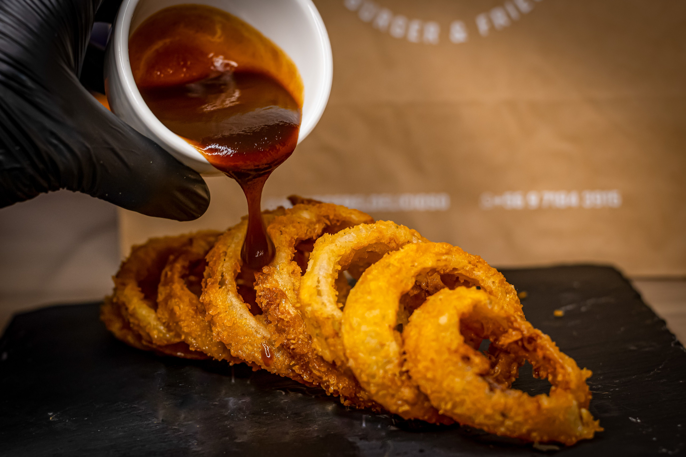

Home
Onion Rings Recipe

Description
Onion Rings are a popular crispy snack made with thick slices of onion coated in a seasoned batter and breadcrumbs. They are deep-fried until golden brown and crunchy on the outside while remaining soft and tender on the inside.
Flavoured with paprika, garlic powder, and black pepper, these delicious onion rings make a perfect snack or side dish. They are best served hot with ketchup, mayonnaise, or your favourite dipping sauce.
Ingredients
- 2 large onions
- 1 cup plain flour
- 1/2 cup cornflour
- 1 tsp baking powder
- 1 tsp paprika
- 1/2 tsp garlic powder
- 1/2 tsp black pepper
- 1 tsp salt
- 1 cup cold milk
- 1 large egg
- 1 1/2 cups breadcrumbs
- Vegetable oil, for deep frying
- Ketchup or mayonnaise, for serving
Steps
- Peel the onions and cut them into thick slices approximately 1 cm wide. Separate the slices into individual rings.
- In a large bowl, combine plain flour, cornflour, baking powder, paprika, garlic powder, black pepper, and salt. Mix well.
- In a separate bowl, whisk together the cold milk and egg. Slowly pour the wet mixture into the dry ingredients and whisk until a smooth batter forms.
- Place the breadcrumbs in a separate shallow bowl. Dip each onion ring into the batter, allowing excess batter to drip off, then coat it evenly with breadcrumbs.
- Heat vegetable oil in a deep pan to approximately 180°C. Carefully fry the onion rings in small batches for 2–3 minutes until golden brown and crispy.
- Remove the onion rings using a slotted spoon and place them on a plate lined with paper towels to drain excess oil.
- Serve immediately while hot and crispy with ketchup, mayonnaise, or your favourite dipping sauce.